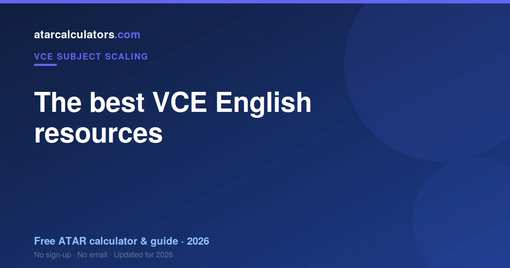
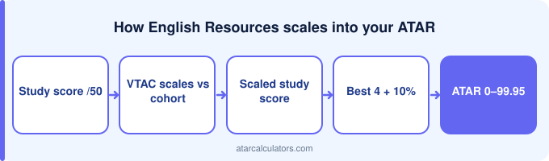

The most useful VCE English resources are VCAA’s past exams and examiner reports, which are free and exam-accurate, the current study design, your set texts, and practice essays. English rewards practising analysis and writing, so work through past exams under timed conditions, read the examiner reports, and get feedback on your essays. Your teachers are a valuable resource too, since they mark to the same criteria. Use good resources systematically rather than relying on any single one.
Key takeaways
- VCAA past exams and reports are the best resource.
- They are free and exam-accurate.
- Use the study design and your set texts.
- Practise essays under timed conditions.
- Get feedback on your writing.
- Read the examiner reports closely.

VCAA past exams and examiner reports
VCAA past exams and examiner reports are the core English resource, and the reports are unusually candid. They describe what separated the high-scoring responses from the competent ones, in the assessors' own words.
They are free, and they are the only place that judgement is written down.
The current study design
The English study design sets out what each task actually assesses. English students frequently prepare for the task they imagine rather than the one described, and the design is the correction.
Summary notes
Notes are close to useless in English. Nothing is recalled — the exam asks you to think in response to an unseen prompt.
How to use past exams well
Past exams supply unseen prompts. That is their entire value: questions you have not prepared for.
Practising English the right way
Practice in English means writing full responses under time and having them read critically. Model essays train recall of someone else's thinking.
Free vs paid resources
VCAA publishes past exams and examiner reports free. The reports describe what separated high responses — the only place that judgement exists.
Your teachers
Your English teacher reading your writing critically is the single most valuable resource here, and it is free.
A study plan
Plan English revision around writing volume, not reading. The texts are the entry fee.
See how your score scales
As you track your progress, our VCE English scaling calculator shows roughly how your score scales, so you can see how the subject fits your ATAR.
Treat the result as indicative, since scaling changes each year. Your study score is what your scaled score depends on.
How many resources do you need?
How much English practice is enough? Until you can build an argument to an unseen prompt without reaching for a prepared one.
Judging resource quality
Quality in English resources is about prompts, not essays. A bank of unseen questions beats a bank of model answers.
Active vs passive study
Active English revision means writing to an unseen prompt, in exam time, then having it marked honestly.
When to use each resource
Schedule English around weekly writing. The skill develops slowly and cannot be assembled in October.
Making your own notes
Your own English notes are worth little. Your own essays, marked, are worth a great deal.
Studying with others
Group work in English helps for reading each other's arguments — you see the prepared essay in someone else before your own.
Exam-focused resources
VCAA English reports describe the assessors' judgement in their own words. Read them before writing another practice essay.
Common questions
What are the best resources for VCE English?
The most useful VCE English resources are VCAA past exams and examiner reports, which are free and exam-accurate, the current study design, and quality summary notes. Working through past exams under timed conditions and reading the examiner reports is the fastest way to lift your score.
Where can I get VCE English past exams?
VCAA publishes past VCE English exams and examiner reports for free. These are the real papers and the markers’ own feedback, so they are the most accurate practice available. Use them under timed conditions and mark against the reports.
Are there free notes for VCE English?
Yes. Alongside VCAA’s free past exams, reports and study design, many free summary notes exist. Making your own notes from the study design is often more valuable, and any notes you use should be checked against the current design.
How do I revise for VCE English?
Work through the study design as a checklist, practise VCAA past exams under timed conditions, mark against the examiner reports, and target your weak areas. Ask your teachers for feedback, and revise steadily rather than cramming.